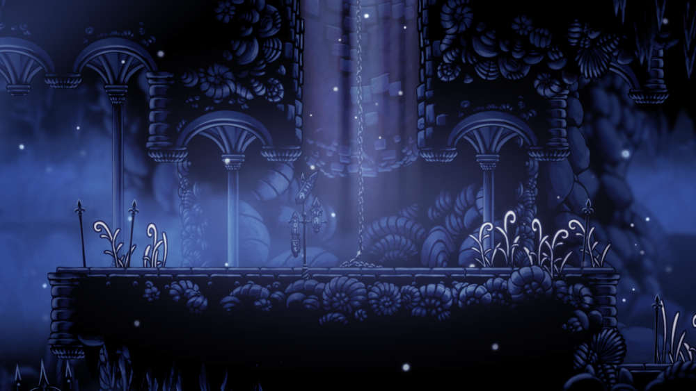
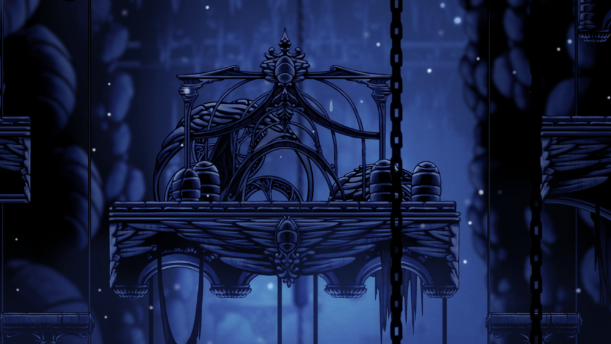
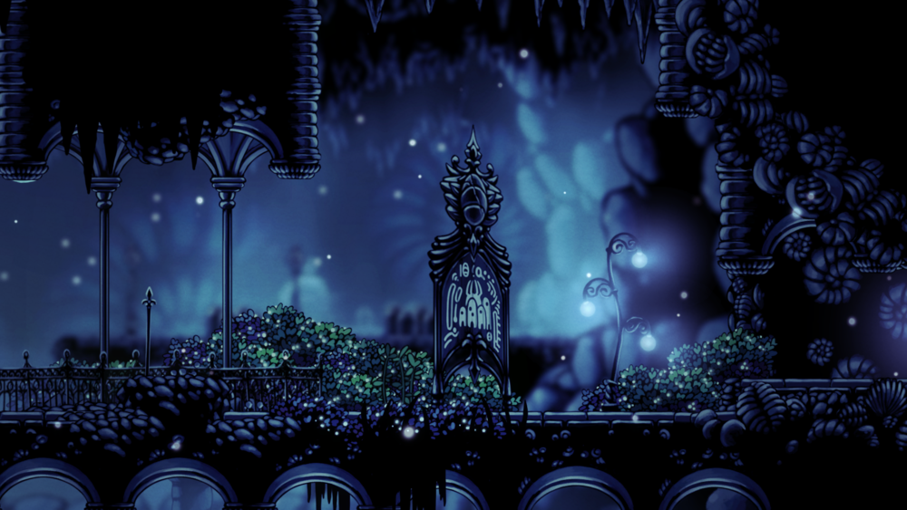
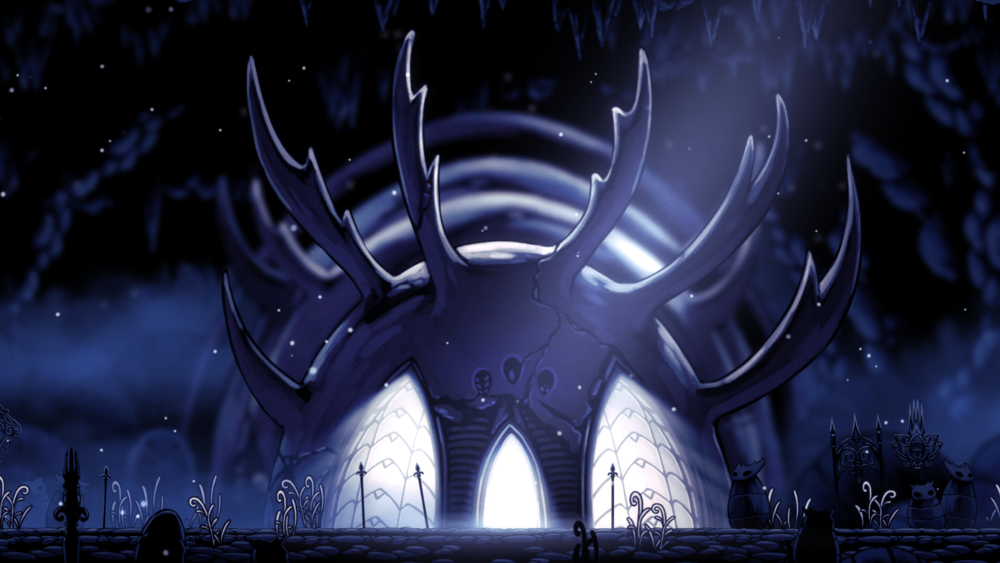
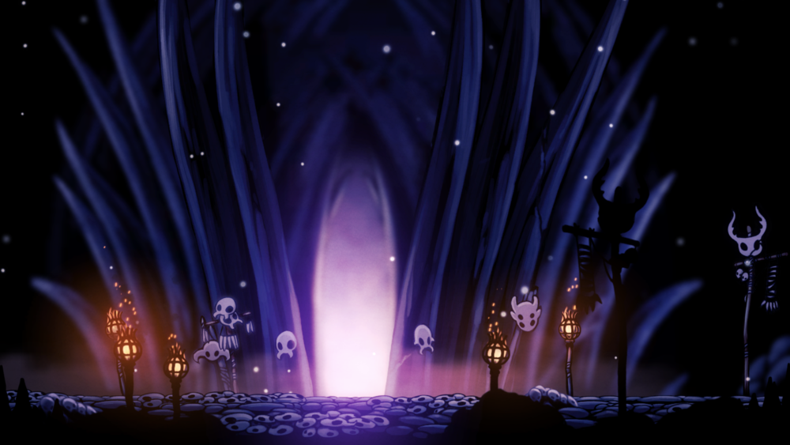
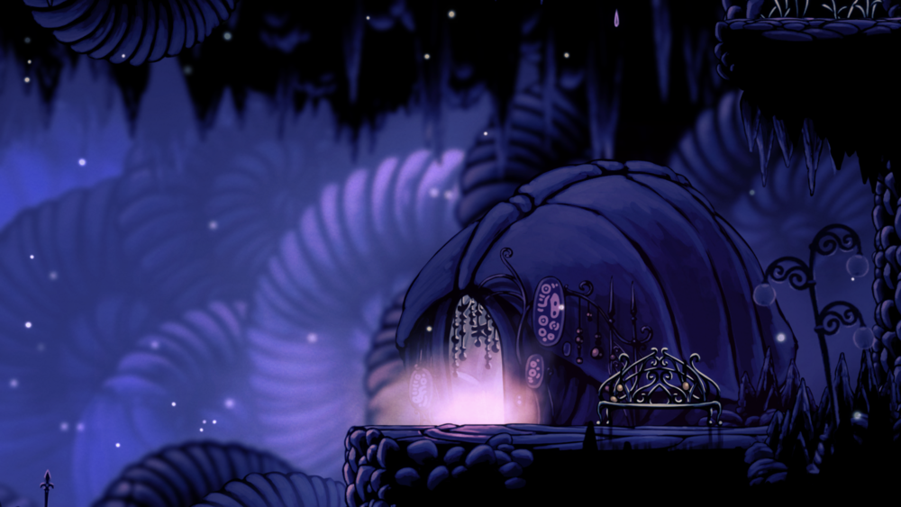

The Forgotten Crossroads were once bustling with life. Many bugs from all over the kingdom, especially travellers and traders, explored the area as it had many connections to the other parts of the kingdom. It also featured the Pilgrim's Way, a long route which led to the capital of Hallownest, the City of Tears. But because of the Infection that spread out in the kingdom, all means of transportation in and out of the Crossroads were ceased. And now, it turned to a barren and desolate land, populated with creatures carrying the Infection and even reanimated corpses!
The Forgotten Crossroads
An area located right below the surface, consisting of many highways and caverns that connect to many other places in Hallownest.
Located just below Dirtmouth. It is also located at the left of the Resting Grounds (via tram) and Crystal Peak, above the City of Tears (via elevator), and right of Greenpath, the Fungal Wastes, and the Fog Canyon.
Lore
Inhabitants
- Characters
- Grubfather
- Salubra
- Enemies
- Aspids
- Baldurs
- Crawlids
- Gruzzers
- Husks
- Tiktiks
- Vengeflies
Gallery

Entrance from Dirtmouth's well

Top of the western platform room

The start of the Pilgrim's Way

The Temple of the Black Egg

Ancestral Mound

Salubra's Shop